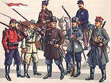

Polskie powstania narodowe
Polskie powstania narodowe

Powstać jak feniks z popiołów
'Powstać na nowo po całkowitym zniszczeniu'; zwrot, w mitol. grec. Feniks
– legendarny ptak z Etiopii, który pod koniec długiego życia spalał się na stosie,a z popiołów odradzał się na nowo.
Stał się symbolem odmłodzenia i zmartwychwstania.
Takiego właśnie zmartwychwstania doświadczała Polska na przestrzeni swojej 1050 letniej historii.
Kilka słów o opracowaniach
Opracowania zostały oparte na różnych artykułach dostępnych w sieci oraz o rozmaite książki.